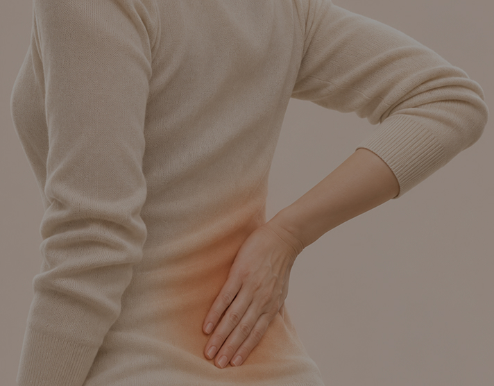
척추
Spine허리디스크 / 척추관 협착증
척추 측만증 / 좌골신경통
근육·관절·신경의 관계를 세밀하게 관찰하고
환자에게 필요한 치료를 함께 결정합니다.
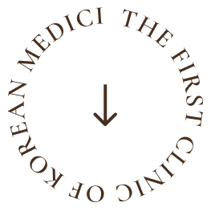
The First Clinic of Korean Medicine
허리와 다리의 통증부터 어깨·무릎·팔꿈치의 불편까지,
부위별 주요 질환과 증상을 확인해 보세요.

허리디스크 / 척추관 협착증
척추 측만증 / 좌골신경통
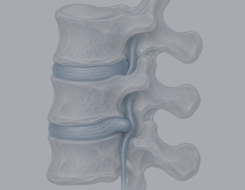
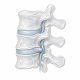
척추뼈 사이의 디스크가 돌출돼 신경을 자극하는 질환입니다. 허리 통증과 함께 엉덩이·다리의 저림이나 감각 저하가 나타날 수 있습니다.
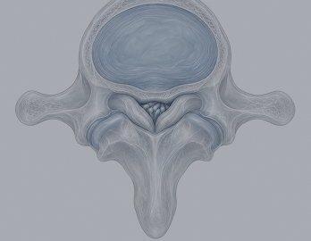
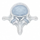
신경이 지나는 척추관이 좁아져 통증과 저림을 유발하는 질환입니다. 오래 서 있거나 걸을 때 허리와 다리의 불편이 심해질 수 있습니다.
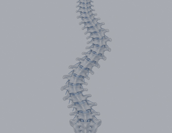
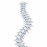
척추가 옆으로 휘고 회전하면서 몸의 정렬이 달라지는 질환입니다. 어깨나 골반의 높이가 다르거나 몸통이 한쪽으로 기울어 보일 수 있습니다.
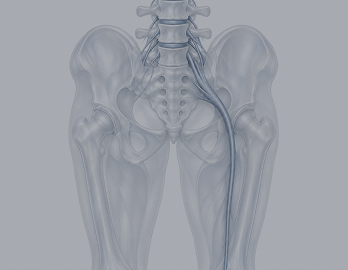
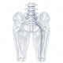
좌골신경이 자극되거나 눌리면서 엉덩이에서 다리 뒤쪽으로 통증이 이어지는 증상입니다. 저림이나 감각 둔화가 함께 나타나기도 합니다.
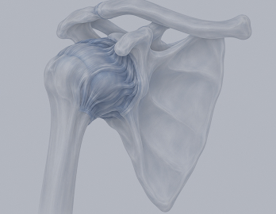
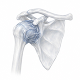
어깨가 굳고 통증이 생겨 팔을 들거나 뒤로 돌리는 동작이 어려워질 수 있습니다.
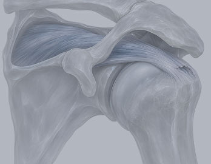
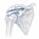
어깨 힘줄이 손상돼 팔을 들 때 아프거나 힘이 빠지는 증상이 나타날 수 있습니다.
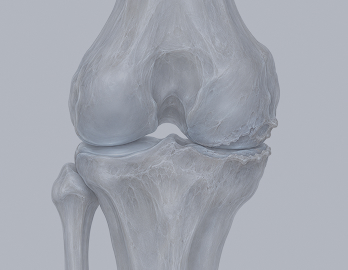
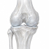
관절에 통증과 뻣뻣함이 생기며, 걷거나 계단을 오르내릴 때 불편할 수 있습니다.
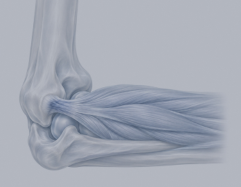
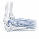
팔꿈치 바깥쪽에 통증이 생기며, 물건을 쥐거나 손목을 움직일 때 심해질 수 있습니다.
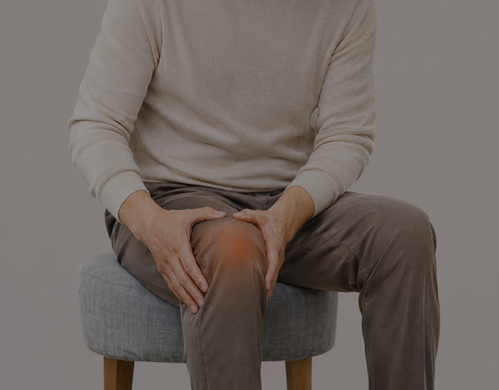
오십견 / 회전근개 손상
퇴행성 관절염 / 테니스 엘보
The First Clinic of Korean Medicine
어떤 운동과 동작에서 다쳤는지, 통증과 움직임의 불편을 함께 확인하고 현재 상태에 필요한 치료와 재활운동을 안내합니다.
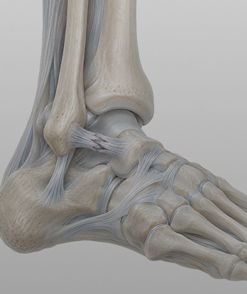
발목 염좌 / 인대 손상
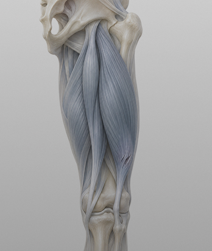
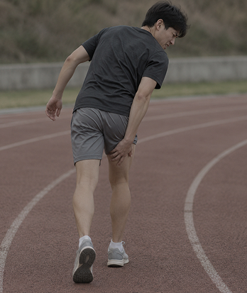
햄스트링 / 종아리 근육 손상
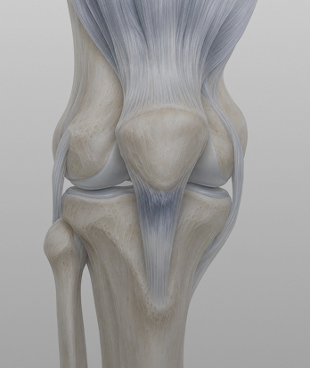
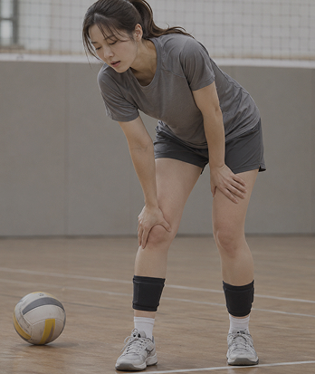
슬개건병증 / 반월상연골·인대 손상
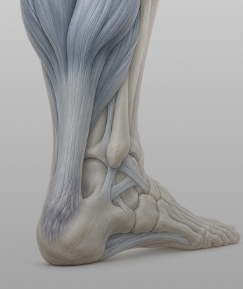
아킬레스건병증
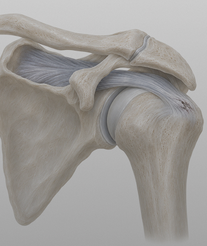
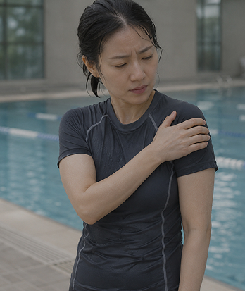
회전근개 힘줄 손상
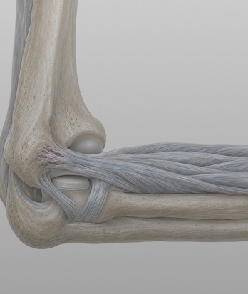
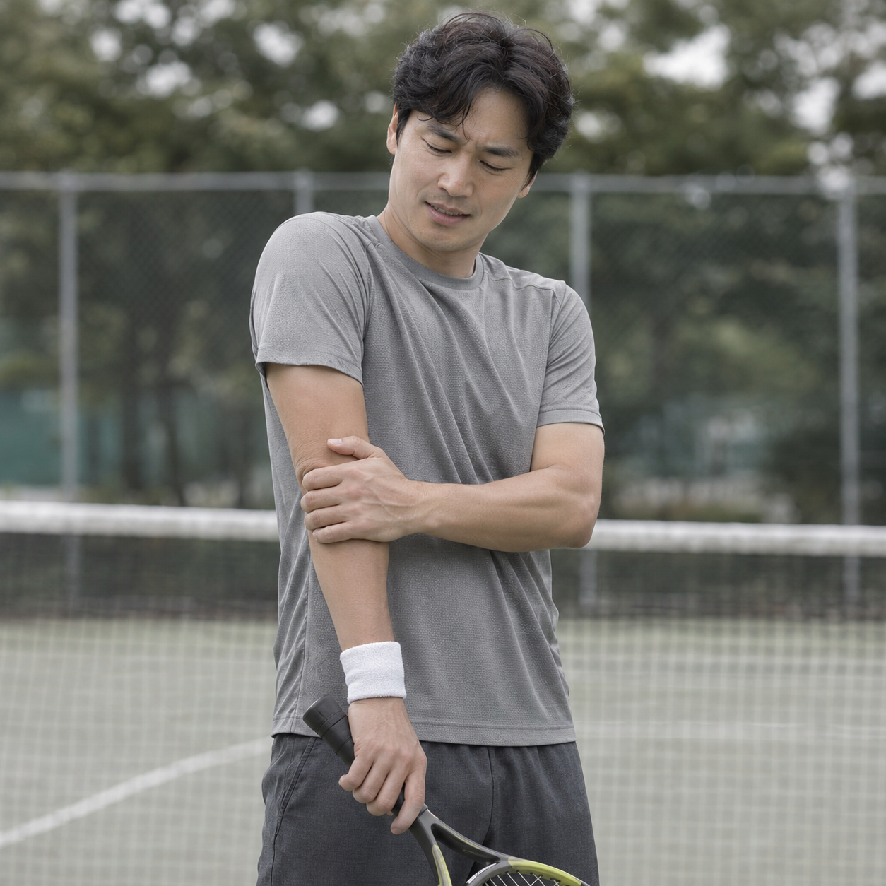
테니스 엘보·골프 엘보
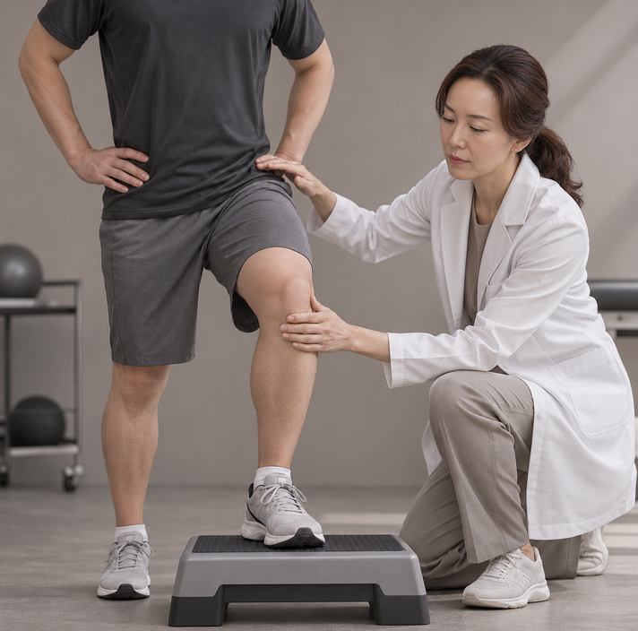
생활체육지도사 자격을 갖춘 대표원장이
현재 기능과 운동 습관을 살펴,
상태에 맞는 재활운동과 관리 방법을 안내합니다.
어떤 동작에서 불편한지, 움직임의 범위와 힘을 쓰는 양상을 살펴 운동 방향을 정합니다.
현재 수행할 수 있는 범위에서 가동성 · 근력 · 균형을 위한 운동을 안내합니다.
운동 후 반응과 남아 있는 불편을 확인하며, 활동의 강도와 빈도를 조절하는 방법을 안내합니다.
The First Clinic of Korean Medicine
통증의 양상과 몸의 상태에 따라 침·약침·추나요법 등 적합한 치료를 선택하고, 운동과 생활 관리 방법을 함께 안내합니다.
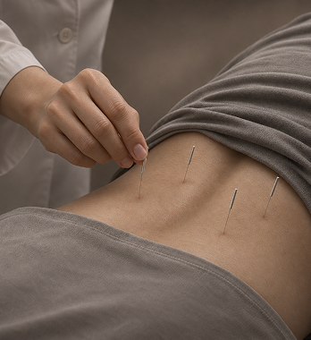
통증 부위와 진찰 소견에 따라 치료 부위를 정하여 치료합니다.
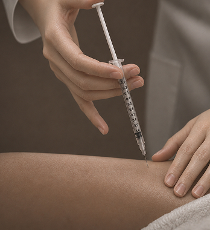
증상과 몸 상태, 사용 성분 등을 고려해 적용 여부를 판단하여 치료합니다.
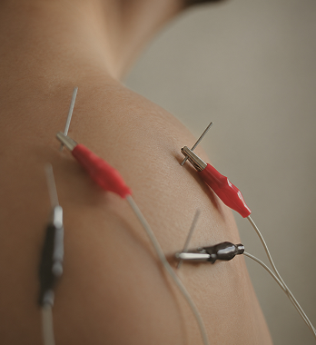
침에 전기 자극을 더하고, 몸의 반응을 살피며 강도를 조절합니다.
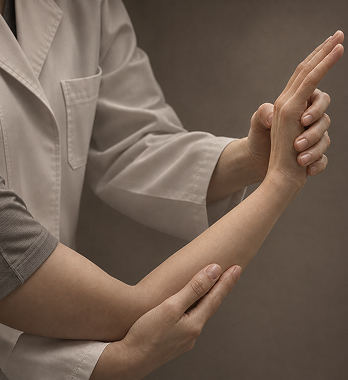
관절 움직임과 신체 상태에 맞춰 방법과 강도를 정합니다.
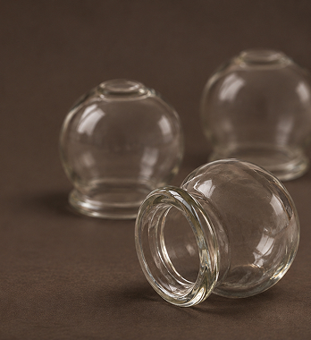
치료 부위에 부항 컵을 붙이고, 컵 안의 압력을 낮춰 피부에 자극을 줍니다.
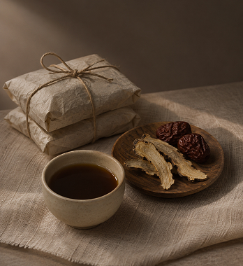
증상과 함께 소화·수면 등 몸 상태를 살펴 한약을 처방합니다.
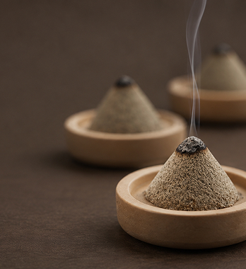
쑥을 태울 때 생기는 열로 치료 부위에 온열 자극을 줍니다.
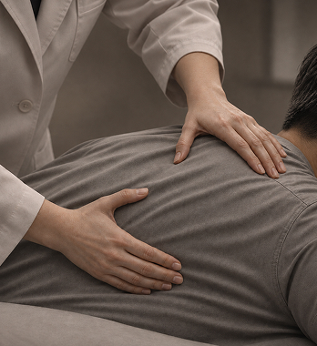
현재 상태와 일상 동작을 고려해 일상에서도 가능한 관리 방법을 안내합니다.
The First Clinic of Korean Medicine
아드레날린과 긴장으로 통증이 무뎌진 상태이나 실제로는 근육, 인대, 신경에 손상이 진행 중입니다.
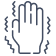
긴장과 흥분 상태가 완화되고, 염증 반응과 통증이 본격화되며 치료가 꼭 이루어져야 하는 시기입니다.
급성기를 넘어 만성화가 진행되며, 시간이 지날수록 회복이 점점 어려워집니다.
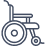
구조적 변화가 고착화되어 완치보다는 평생 관리가 필요한 상태가 됩니다.
교통사고 발생 시 경미한 사고라도 즉시 적극적인 치료를 받아야 합니다. 눈에 보이는 외상 외에 교통사고 후유증은 수개월에 걸쳐 나타날 수 있습니다.
교통사고 후유증 더 알아보기- 목·어깨·허리 통증
- 뻣뻣함과 움직임 불편
- 지속되는 두통과 귀울림
- 어지럼과 균형감 저하
- 더부룩함과 메스꺼움
- 식욕 저하와 소화 불편
- 불면과 잦은 잠 깸
- 긴장·불안·우울감
The First Clinic of Korean Medicine
근육과 관절이 어떻게 맞물려 움직이는지 살피고, 어떤 동작에서 통증이 생기거나 움직임이 제한되는지 분석합니다. 제일한의원은 이러한 해부학적 접근을 바탕으로 어느 부위부터 치료할지 판단합니다.
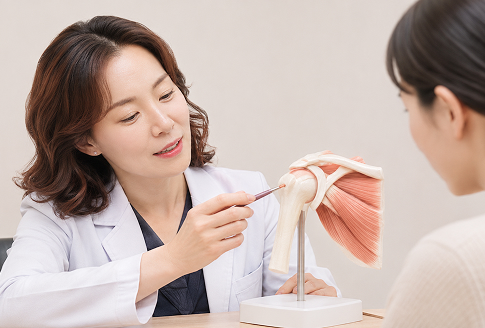
궁금한 점을 편하게 묻고, 왜 이 치료가 필요한지 충분히 이해할 수 있도록. 제일한의원은 그 대화에서 진료의 신뢰가 시작된다고 믿습니다.
The First Clinic of Korean Medicine
네, 정확한 병명을 모르셔도 괜찮습니다. 불편한 부위와 증상이 시작된 시점, 통증이 생기는 동작을 알려주시면 진료를 통해 상태를 살펴봅니다.
네, 기존 검사 결과지나 영상 자료, 복용 중인 약 정보가 있다면 함께 가져와 주세요. 현재 증상과 기존 자료를 함께 살펴 진료에 참고합니다.
모든 환자에게 동일하게 시행하지 않습니다. 증상과 몸 상태, 병력 등을 확인한 뒤 치료의 필요성과 적합성을 판단하고, 충분히 설명한 후 진행합니다.
운동의 종류와 강도는 현재 상태에 따라 달라집니다. 평소 하는 운동을 알려주시면, 통증을 유발하는 동작과 조절이 필요한 범위를 살펴 안내합니다.
증상의 정도와 지속 기간, 일상생활의 불편을 고려해 계획합니다. 치료 후 통증과 움직임의 변화를 확인하며 횟수와 간격을 조정합니다.